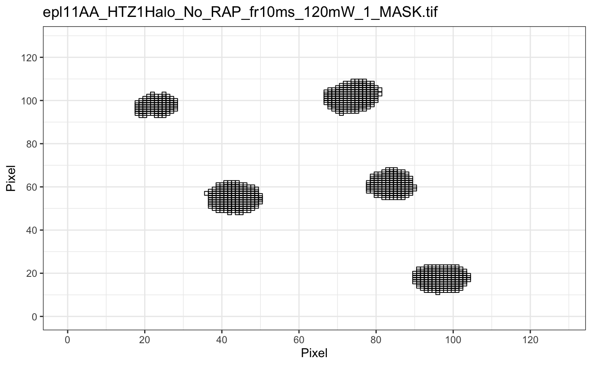
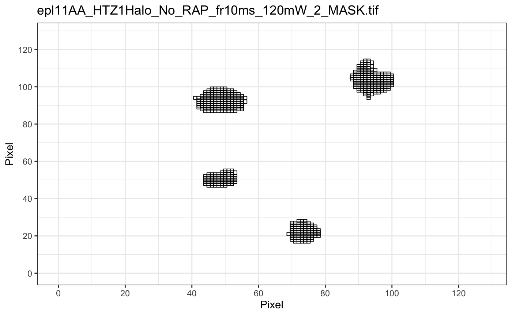
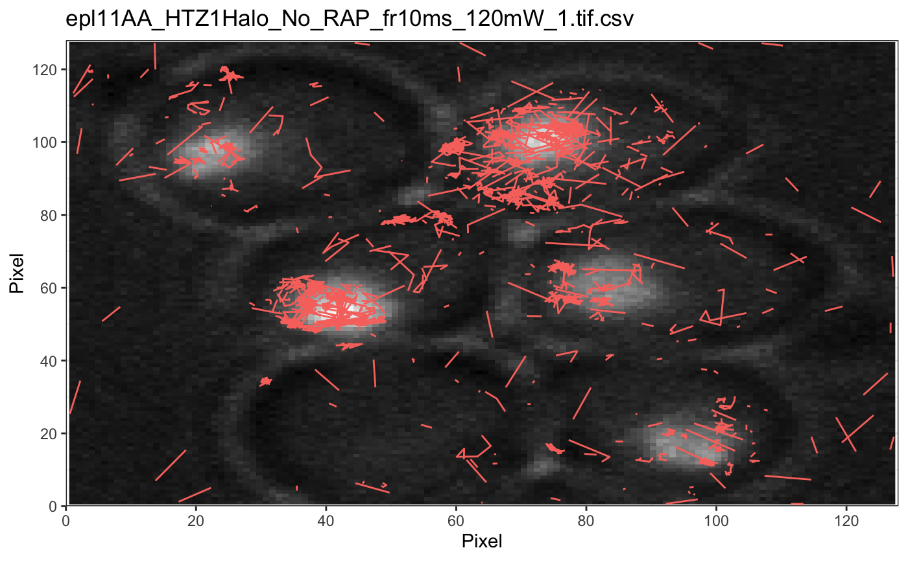
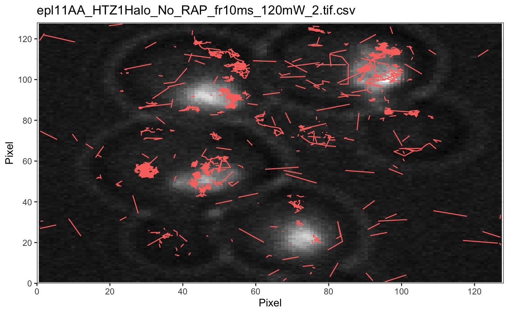
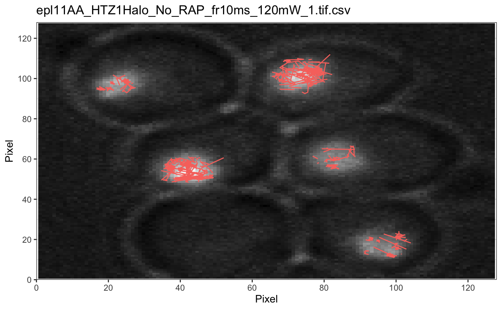
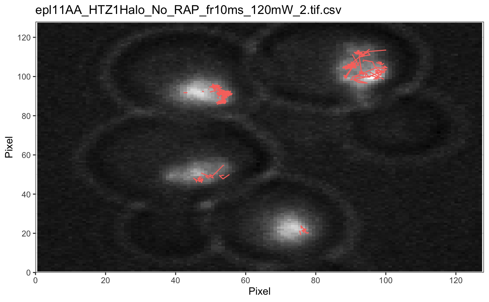

apply binary image masks to lists of track lists
maskTracks(folder, trackll) indexCell(folder, trackll, areaFilter = c(0, Inf), intensityFilter = c(0, Inf), export = FALSE, max.pixel = 128) filterOnCell(trackll, numTracks = 0) sampleTracks(trackll, num = 0)
Arguments
| folder | Full path to the output files. |
|---|---|
| trackll | A list of track lists. |
| export | Logical indicate if .csv output file should be generated |
| max.pixel | Pixel dimension of image |
| areaFilter | Range of cell areas (pixel sq) to keep in filtering |
| intensityFilter | Range of avg cell intensities (grayscale) to keep in filtering |
| numTracks | Minimum number of required tracks in the trackll |
| num | Number of tracks to randomly sample per trackl in trackll |
Value
masked tracks in trackll format
Details
IMPORTANT: It will take an extremely long time to mask large datasets. Filter/trim first using filterTrack() and trimTrack(), then mask using maskTracks(folder, trackll)! Note the mask file should have the same name as the output files with a '_MASK.tif' ending. If there are more mask files than trackll, masking will fail. If there are less mask files, trackls without masks will be deleted. Users can use plotMask() and plotTrackOverlay() to see the mask and its effect on screening tracks.
indexCell() will mask a trackll, separate each cell into a trackl, display all cell areas and mean intensities, and then apply any area and intensity filters. There is also the capability to export the final areas/intensities as 'indexCell.csv' to the home directory and the pixel dimensions can be changed.
filterOnCell() eliminates all trackl in trackll that has less than numTracks tracks.
sampleTracks() randomly samples num number of tracks for each trackl in trackll.
Examples
#Basic masking with folder path with image masks folder = system.file('extdata','ImageJ',package='sojourner') trackll = createTrackll(folder=folder, input=3)#> #> Reading ParticleTracker file: epl11AA_HTZ1Halo_No_RAP_fr10ms_120mW_1.tif.csv ... #> #> 0mW_1 read and processed. #> #> Reading ParticleTracker file: epl11AA_HTZ1Halo_No_RAP_fr10ms_120mW_2.tif.csv ... #> #> 0mW_2 read and processed. #> #> Process complete.trackll.masked <- maskTracks(folder = folder, trackll = trackll)#> Reading mask file epl11AA_HTZ1Halo_No_RAP_fr10ms_120mW_1_MASK.tif #> Reading mask file epl11AA_HTZ1Halo_No_RAP_fr10ms_120mW_2_MASK.tif #> #> All files masked.#> #> Processing epl11AA_HTZ1Halo_No_RAP_fr10ms_120mW_1.tif.csv #> Processing epl11AA_HTZ1Halo_No_RAP_fr10ms_120mW_2.tif.csv #> Output combined plot...#> #> Done!plotTrackOverlay(trackll.masked)#> #> Processing epl11AA_HTZ1Halo_No_RAP_fr10ms_120mW_1.tif.csv #> Processing epl11AA_HTZ1Halo_No_RAP_fr10ms_120mW_2.tif.csv #> Output combined plot...#> #> Done!#> #> Reading mask file epl11AA_HTZ1Halo_No_RAP_fr10ms_120mW_1_MASK.tif#> #> Reading mask file epl11AA_HTZ1Halo_No_RAP_fr10ms_120mW_2_MASK.tif#> #> Done!#> #> Processing epl11AA_HTZ1Halo_No_RAP_fr10ms_120mW_1.tif.csv#> #> Processing epl11AA_HTZ1Halo_No_RAP_fr10ms_120mW_2.tif.csv#> #> Output combined plot...#> #> Done!#> #> Processing epl11AA_HTZ1Halo_No_RAP_fr10ms_120mW_1.tif.csv#> #> Processing epl11AA_HTZ1Halo_No_RAP_fr10ms_120mW_2.tif.csv#> #> Output combined plot...#> #> Done!#> #> Reading mask file epl11AA_HTZ1Halo_No_RAP_fr10ms_120mW_1_MASK.tif#> #> Reading mask file epl11AA_HTZ1Halo_No_RAP_fr10ms_120mW_2_MASK.tif#> #> Done!# To mask a trackll, separate each cell into a trackl, and apply any # intensity and area filters str(trackll, max.level=1)#> List of 2 #> $ epl11AA_HTZ1Halo_No_RAP_fr10ms_120mW_1.tif.csv:List of 800 #> $ epl11AA_HTZ1Halo_No_RAP_fr10ms_120mW_2.tif.csv:List of 544trackll_indexed = indexCell(folder = folder, trackll = trackll)#> epl11AA_HTZ1Halo_No_RAP_fr10ms_120mW_1 #> Cell Areas (pixels squared): #> 94 #> 166 #> 169 #> 137 #> 153 #> Cell Intensities (grayscale): #> 0.633249895702962 #> 0.734136546184739 #> 0.672467803689523 #> 0.572921139258623 #> 0.537459951300782 #> #> epl11AA_HTZ1Halo_No_RAP_fr10ms_120mW_2 #> Cell Areas (pixels squared): #> 157 #> 70 #> 88 #> 154 #> Cell Intensities (grayscale): #> 0.667041338828525 #> 0.583977591036415 #> 0.709447415329768 #> 0.652711993888464 #> #> #> Only cell with areas between 0 and Inf pixels sq kept. #> Only cell with avg intensities between 0 and Inf grayscale kept. #> #> All files masked, separated by cell indexes, and filters applied.#> List of 9 #> $ epl11AA_HTZ1Halo_No_RAP_fr10ms_120mW_1.tif.csv_1:List of 29 #> $ epl11AA_HTZ1Halo_No_RAP_fr10ms_120mW_1.tif.csv_2:List of 111 #> $ epl11AA_HTZ1Halo_No_RAP_fr10ms_120mW_1.tif.csv_3:List of 84 #> $ epl11AA_HTZ1Halo_No_RAP_fr10ms_120mW_1.tif.csv_4:List of 35 #> $ epl11AA_HTZ1Halo_No_RAP_fr10ms_120mW_1.tif.csv_5:List of 34 #> $ epl11AA_HTZ1Halo_No_RAP_fr10ms_120mW_2.tif.csv_1:List of 67 #> $ epl11AA_HTZ1Halo_No_RAP_fr10ms_120mW_2.tif.csv_2:List of 10 #> $ epl11AA_HTZ1Halo_No_RAP_fr10ms_120mW_2.tif.csv_3:List of 2 #> $ epl11AA_HTZ1Halo_No_RAP_fr10ms_120mW_2.tif.csv_4:List of 41# To eliminate all trackl in trackll that has less than numTracks = 5 tracks # In this example, we eliminate all cells less with less than 5 tracks trackll_filterOnCell = filterOnCell(trackll=trackll_indexed, numTracks = 5) str(trackll_filterOnCell, max.level=1)#> List of 8 #> $ epl11AA_HTZ1Halo_No_RAP_fr10ms_120mW_1.tif.csv_1:List of 29 #> $ epl11AA_HTZ1Halo_No_RAP_fr10ms_120mW_1.tif.csv_2:List of 111 #> $ epl11AA_HTZ1Halo_No_RAP_fr10ms_120mW_1.tif.csv_3:List of 84 #> $ epl11AA_HTZ1Halo_No_RAP_fr10ms_120mW_1.tif.csv_4:List of 35 #> $ epl11AA_HTZ1Halo_No_RAP_fr10ms_120mW_1.tif.csv_5:List of 34 #> $ epl11AA_HTZ1Halo_No_RAP_fr10ms_120mW_2.tif.csv_1:List of 67 #> $ epl11AA_HTZ1Halo_No_RAP_fr10ms_120mW_2.tif.csv_2:List of 10 #> $ epl11AA_HTZ1Halo_No_RAP_fr10ms_120mW_2.tif.csv_4:List of 41# To randomly sample num = 5 tracks fo each trackl in trackll # In this example, we randomly sample 5 tracks for each cell trackll_sampled = sampleTracks(trackll=trackll_filterOnCell, num=5) str(trackll_sampled, max.level=1)#> List of 8 #> $ epl11AA_HTZ1Halo_No_RAP_fr10ms_120mW_1.tif.csv_1:List of 5 #> $ epl11AA_HTZ1Halo_No_RAP_fr10ms_120mW_1.tif.csv_2:List of 5 #> $ epl11AA_HTZ1Halo_No_RAP_fr10ms_120mW_1.tif.csv_3:List of 5 #> $ epl11AA_HTZ1Halo_No_RAP_fr10ms_120mW_1.tif.csv_4:List of 5 #> $ epl11AA_HTZ1Halo_No_RAP_fr10ms_120mW_1.tif.csv_5:List of 5 #> $ epl11AA_HTZ1Halo_No_RAP_fr10ms_120mW_2.tif.csv_1:List of 5 #> $ epl11AA_HTZ1Halo_No_RAP_fr10ms_120mW_2.tif.csv_2:List of 5 #> $ epl11AA_HTZ1Halo_No_RAP_fr10ms_120mW_2.tif.csv_4:List of 5